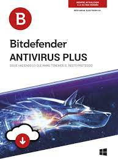
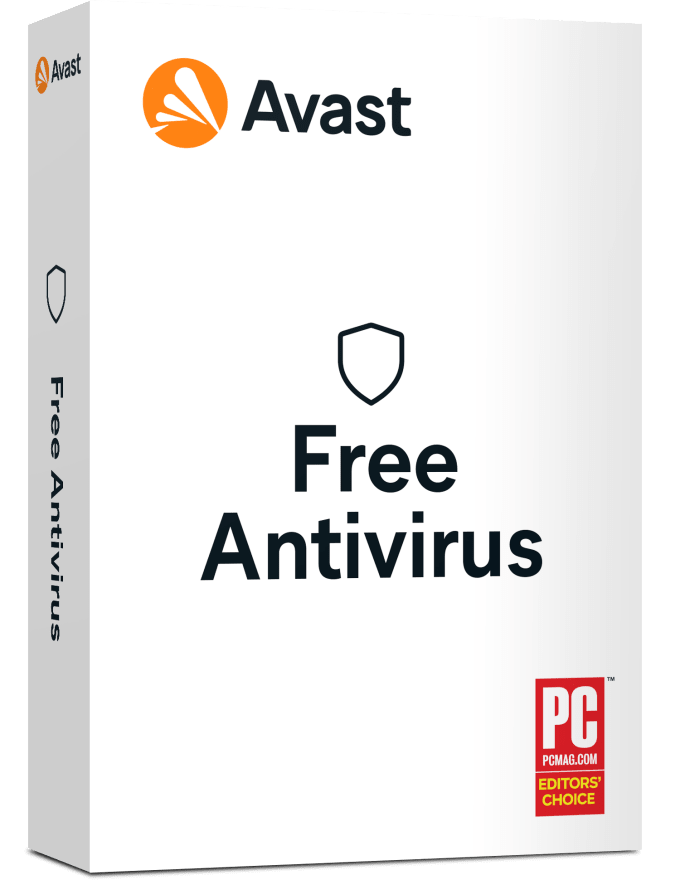
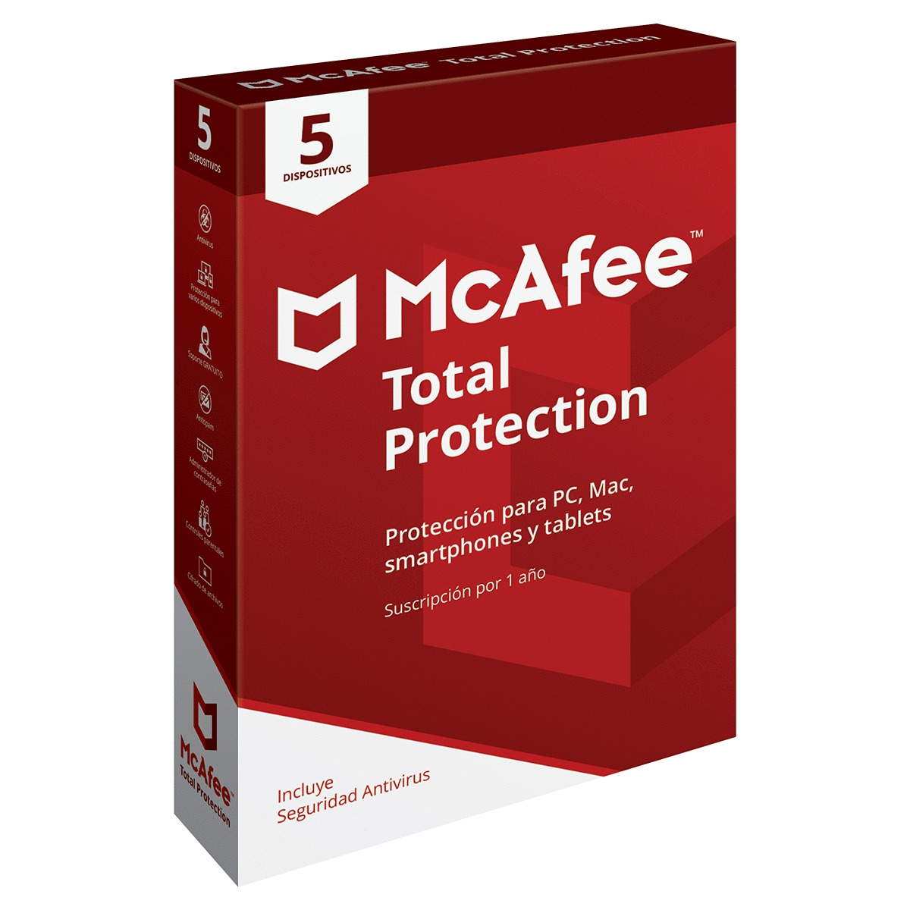
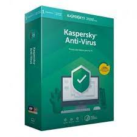
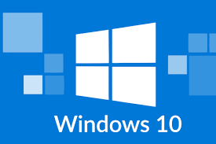
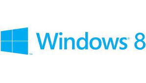
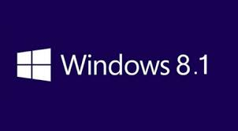
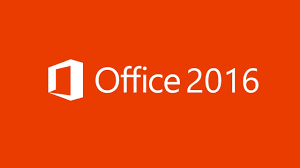
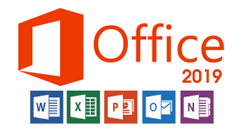
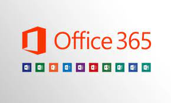

Antivirus

ESTE Nodo 32
¿Qué tan bueno es el antivirus NOD 32?Antivirus excelente. No consume apenas recursos, es muy silencioso, tiene una gran capacidad de protección y tiene funcionalidades tanto para usuarios con poca experiéncia como para usuarios profesionales.
Precio:$600 5 equipos 1 año

Bitdefender antivirus plus
En general, el escáner de malware de Bitdefender es uno de los mejores del mercado. Es rápido, no ralentiza el sistema, y tiene porcentajes perfectos de detección de malware. Si buscas un escáner antivirus que sea ligero y potente, Bitdefender es una excelente elección
Precio:$500 3 equipos 1 año

Avast Premiun
Avast Premium Security analiza los sitios web en busca de riesgos de seguridad tanto en su PC como en el teléfono móvil: así podrá, por fin, realizar compras y operaciones bancarias en línea de forma segura y en cualquier dispositivo. Con el paso de los años, los sitios web falsos son cada vez más sofisticado
Precio:$400 1 equipos 1 año

McAffe total protección
¿Es McAfee un buen antivirus? Sí, McAfee figura entre los mejores buscadores de malware del mercado, avalado por su tasa de detección del 100 % de varios tipos de malware, incluyendo troyanos, rootkits, spyware, adware y más.
Precio:$400 5 equipos 1 año

Kasperky antivirus
Antivirus Kaspersky es la primera arma de defensa de tu PC debido a que ofrece tecnologías anti-malware galardonadas que te protegen frente a virus, spyware y otros tipos de malware.
Precio:$800 3 equipos 1 año
Sistemas Operativos

Windows 10
Windows 10 está diseñado para adaptar la interfaz de usuario en el tipo de dispositivo que está siendo utilizado y los métodos de entrada disponibles. Ofrece dos modos de interfaz de usuario diferentes: un modo tableta optimizado para su uso con pantallas táctiles, y uno optimizado para el ratón y el teclado
Precio:$280 1 año

Windows 8
Windows 8 es un sistema operativo diseñado por Microsoft. Su mayor diferencia con las versiones anteriores de Windows es que presenta cambios en el menú de inicio, en la interacción y en la conectividad.
Precio:$200 1 año

Windows 8.1
Windows 8 RT: es una versión de Windows totalmente nueva, especialmente diseñada para ordenadores (portátiles) y tablets con arquitectura ARM. Es una versión muy “ligera”, pensada para conseguir que la batería dure el máximo posible.
Precio:$200 1 año
Office

office 2016 professional plus
Microsoft Office 2016 es una suite de aplicaciones de productividad que incluye Microsoft Word, Microsoft Excel, Microsoft PowerPoint y Microsoft Outlook. Es el sucesor de Microsoft Office 2013 para Windows y Office para Mac 2011. ... Word, PowerPoint y Excel también incluyen una función de prevención de pérdida de datos.
Precio:$400 1 año, 1 equipo

office 2019 profeccional plus
En Office 2019, encontrará nuevos tipos de datos, herramientas de entrada manuscrita, funciones, herramientas de traducción y edición, gráficos de movimiento, características fáciles de usar y mucho má
Precio:$ 600 1 equipo, 1 año

office 365 personal
Microsoft 365 (también conocido como Office 365) es la herramienta creada por el gigante Microsoft que nos permite crear, acceder y compartir documentos online entre distintos usuarios en Word, Excel, PowerPoint y OneNote, entre otros. Para ello, solo necesitas tener acceso a internet y disponer del programa OneDrive.
Precio:$1,300 1 equipo, 1 año y incluye 1T en Onedrive
Formulario de compra